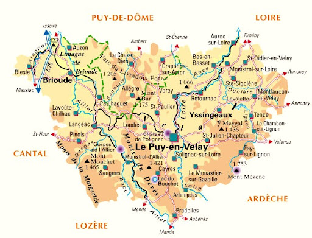

Coordination SPS en phase conception
Analyse des choix, anticipation des risques et préparation des documents de prévention.
Coordonnateur SPS en Haute-Loire
Votre partenaire local pour la prévention des risques sur chantier.
Une entreprise locale au service des maîtres d'ouvrage
Basée à Arsac-en-Velay, SLRP accompagne les opérations de construction, de rénovation et de réhabilitation en Haute-Loire et départements limitrophes.
Nous accompagnons les maîtres d'ouvrage dans l'organisation de la prévention des risques liés à la coactivité des entreprises, depuis la phase de conception jusqu'à la réalisation des travaux.
Nous accordons une importance particulière à la disponibilité, à la réactivité et au dialogue avec les maîtres d'ouvrage, maîtres d'œuvre et entreprises.
Notre implantation locale nous permet d'assurer un suivi régulier des opérations et d'apporter des réponses adaptées aux enjeux de chaque projet.
Une coordination SPS pragmatique, fondée sur le terrain.
La réglementation constitue un cadre indispensable, mais chaque chantier possède ses propres contraintes techniques, humaines et organisationnelles. SLRP privilégie une approche fondée sur le dialogue, la compréhension des réalités du terrain et la recherche de solutions adaptées à chaque opération.
L'objectif est simple : faire de la prévention un outil utile à l'organisation du chantier, et non une contrainte administrative supplémentaire. Les mesures mises en place doivent être compréhensibles, efficaces et applicables par l'ensemble des intervenants.
La coordination SPS ne se limite pas à la phase chantier. Les choix réalisés lors des travaux peuvent également avoir un impact sur les futures interventions de maintenance, d'entretien, de réparation ou de rénovation de l'ouvrage. L'anticipation de ces situations contribue à améliorer durablement la sécurité des intervenants tout au long de la vie du bâtiment.
Des interventions adaptées aux opérations nécessitant une coordination SPS.
Analyse des choix, anticipation des risques et préparation des documents de prévention.
Suivi de chantier, échanges avec les entreprises et adaptation aux réalités du terrain.
Rédaction et mise à jour du PGC SPS pour cadrer les mesures de prévention communes.
Constitution du DIUO pour préparer les interventions futures sur l'ouvrage.
Organisation des échanges préalables avec les entreprises avant leur intervention.
Présence sur site pour vérifier les situations, alerter et suivre les actions nécessaires.
Conseil professionnel et prudent sur les obligations SPS liées à l'opération.
Quand la mission SPS est-elle obligatoire ?
La mission SPS concerne les opérations de bâtiment ou de génie civil faisant intervenir plusieurs entreprises, y compris sous-traitants, lorsqu'il existe des risques liés à la coactivité.
Les catégories SPS permettent d'adapter le niveau d'organisation et de suivi à la nature de l'opération, sans complexifier inutilement la lecture du projet.
Être conseillé sur mon opérationUne présence locale en Haute-Loire et zones limitrophes.

Parlons de votre opération.
Coordonnées visibles, sans obligation d'utiliser le formulaire. Une réponse simple permet de vérifier rapidement si une mission SPS est à prévoir.